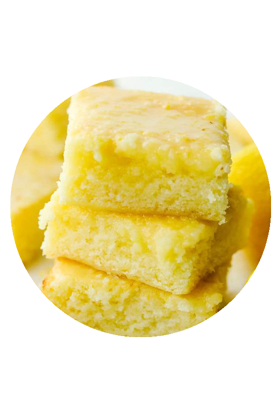

Prep Time
Cook Time
Total Time
20 MINS
50 MINS
70 MINS
Ingredients
- 3/4 cup all-purpose flour
- 3/4 cup white sugar
- 1/2 cup unsalted butter, softened
- 1/2 teaspoon sea salt
- 3 eggs
- 2 tablespoons lemon juice
- 1 tablespoon lemond zest
Steps
- Preheat oven to 350 degrees F. Grease an 8-inch square baking dish.
- Beat flour, white sugar, butter, and sea salt together in a bowl using an electric mixer until well mixed.
- Whisk eggs, 2 tablespoons lemon juice, and 1 tablespoon lemon zest together in a seperate bowl
- mix into flour mixture and beat on medium speed until smooth, anout 3 minutes.
- Pour batter into the prepared baking dish.
- Bake in the preheated oven until a toothpick inserted in the center comes out clean, 23 to 25 minutes.
- Cool until bottom of dish is warm to the touch